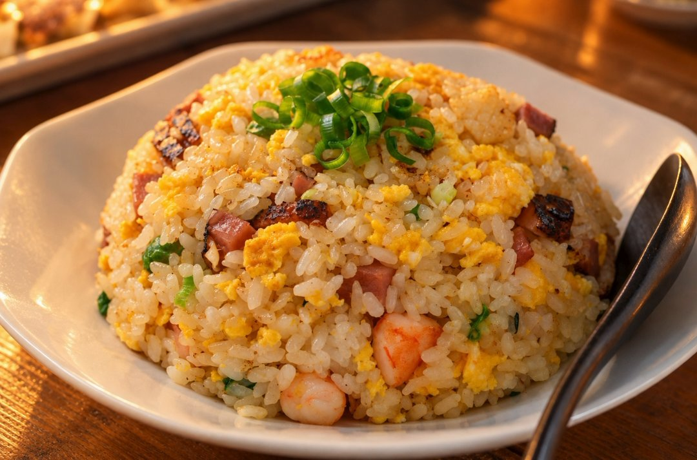

阿旺的 Prompt 库← 全部视频
阿旺的 Prompt 库← 全部视频招牌上的食物不要叫 AI 凭空画，拍你自己炒的那盘，再让 GPT 只换光线。客人看到的，就是端上来的那盘。
开一个新的 GPT 对话，上传你的照片，贴上这段：
Use the attached photo of the real dish as the base. Keep the exact same food, portion and plate — do not invent new ingredients. Lighting: warm tungsten hawker-stall bulb from upper left, soft shadow falling on the right side of the plate, night market ambience, no studio light. Make it look like a real food photo: uneven rice grains, some clumped, some broken, light char and wok-hei browning, natural oil sheen, garnish scattered imperfectly. 45-degree angle, 50mm lens, shallow depth of field, background softly blurred. No text, no logo, no watermark.

一分钟出来的样子：同一盘饭，只换了光
出来的图如果还是太整齐、太完美，在同一个对话再补一句：
Less perfect, keep the rice grains uneven and natural.
千万不要叫它“更完美”。越完美，饭粒就越像一颗颗排好的砖头，有密集恐惧症的客人看了直接跑。不是炒饭的话，把 rice grains 换成你的食物，例如 noodles。